🌍 Organic hub (21)
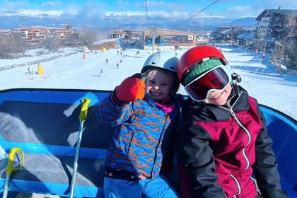
Bansko Town (base city)
A family-gathering destination in Bansko.
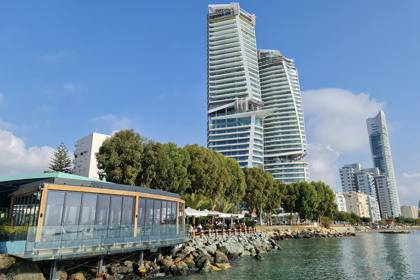
Cyprus (Limassol/Larnaca)
Relocation-grade Israeli nesting base (~800 families Limassol/~400 Larnaca) with British/IB schools, Hebrew daycares and Chabad—year-round.
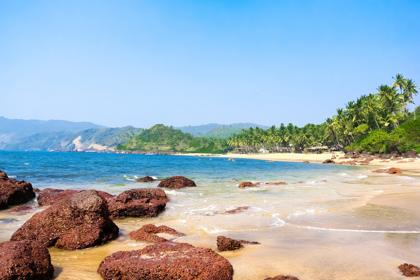
Goa (Arambol/Mandrem)
Long-running Israeli (Arambol) and Russian (Morjim) winter-nesting coast in India with Hebrew kindergartens and beach playgroups, Nov–Mar.
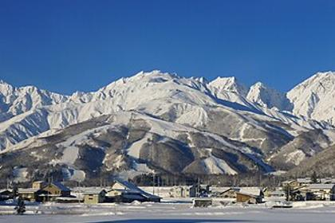
Hakuba International (term/year)
Homeschool families join an international school for a term/year. Mountain town.
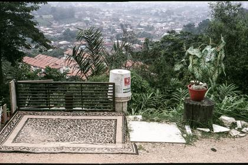
Kuala Lumpur
Year-round Malaysian city repeatedly named the best SE-Asia base for homeschooling community and flexible long stays.
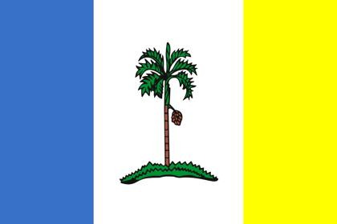
Penang
Stable Malaysian 'school base' for SE-Asia slow travel, with deep German and British expat societies.
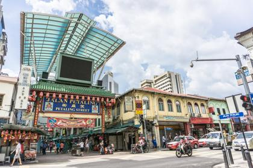
Worldschoolers in Kuala Lumpur
Year-round Malaysian city repeatedly named the best SE-Asia base for homeschooling community and flexible long stays.
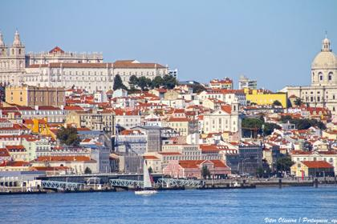
Lisbon / Cascais
Safe, walkable EU base; a US/British international scene plus a growing Israeli relocation cluster around Cascais/Lisbon.
Bliss Hubs Pai
Confirmed Israeli families + Israeli 'forest school' moved from Goa to Pai. Free community hub.
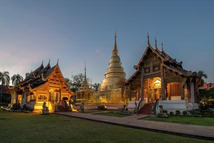
Chiang Mai
Decade-old SE-Asia family base with cafes, meetups and an intl/Israeli scene; families leave Feb–Apr for the burning season.

Koh Lanta
The 'Swedish island' of Thailand—two accredited Swedish schools and a Scandinavian family bubble that runs Nov–Apr with the school calendar.
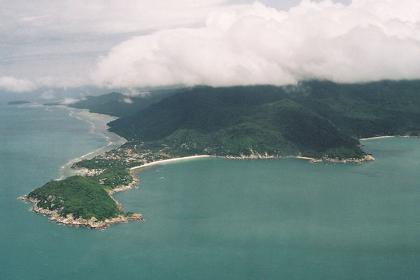
Koh Phangan
Tropical island with a dense (~2,500–4,000) Israeli family community and Hebrew forest/alt-schools; under legal scrutiny after 2026 school raids.
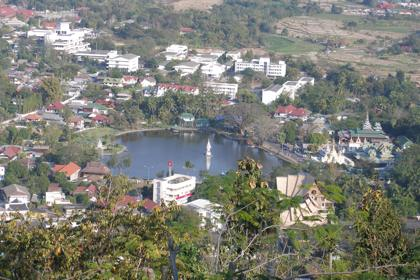
Pai
Cool-season mountain town in N. Thailand where worldschooling families—heavily Israeli—cluster Nov–Feb, emptying out when burning-season haze arrives.
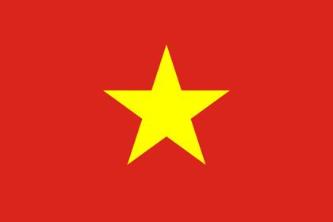
Hoi An / An Bang
Charming, walkable, affordable central-Vietnam base with a 30+ family worldschool community; comfortable Jan–May, avoid Oct–Nov floods.

Worldschoolers of Hoi An
Daily excursions; community-run schedule of events for families and teens
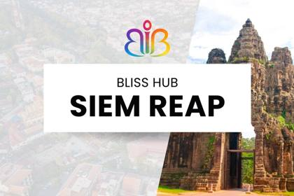
Bliss Hubs Siem Reap
Bliss community hub, Siem Reap.

Bliss Hubs Bali
Free WhatsApp community hub.
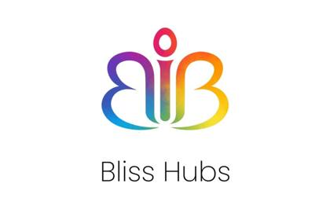
Bliss Hubs Kuala Lumpur
Year-round Malaysian city repeatedly named the best SE-Asia base for homeschooling community and flexible long stays.
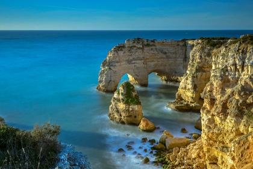
Algarve Worldschooling Hub (Naturally Richer)
Optional daily meetups (beach, hikes, arts, cultural outings).
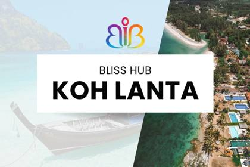
Bliss Hubs Koh Lanta
Free WhatsApp community for longer-stay families.

Bliss Hubs Krabi
A whole-family family-gathering destination in Krabi (Andaman coast).